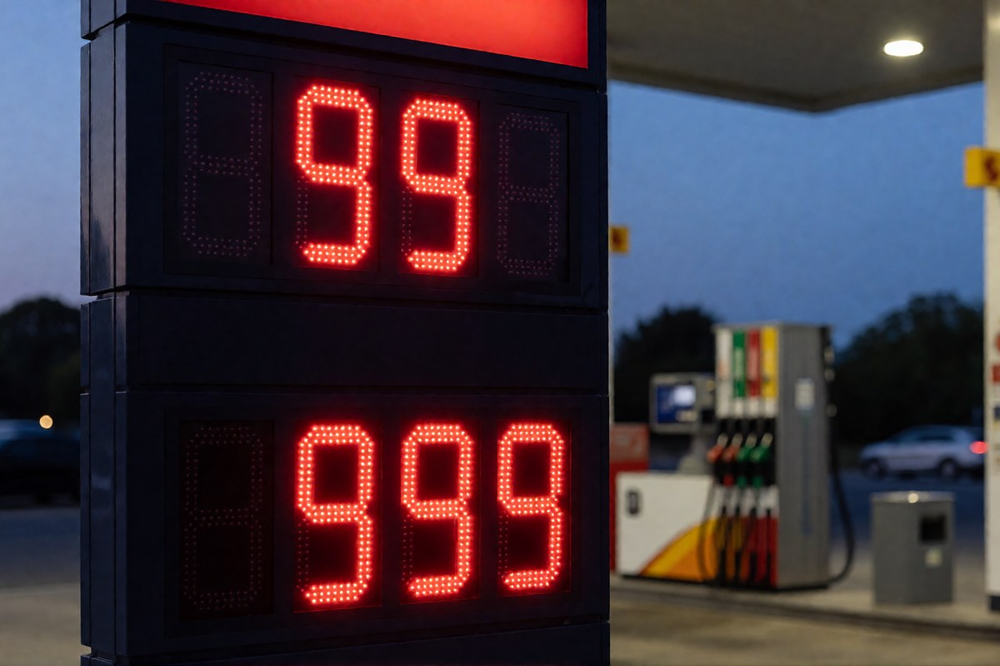

Economia · 10 novembre 2026
Negli Stati Uniti la benzina costa il 37 per cento in più

I prezzi americani di ottobre salgono più delle attese e riaprono la partita dei tassi. Il 9 dicembre decide la Federal Reserve, il 17 la Banca centrale europea: due date che arrivano fin dentro la rata del mutuo.
di Franco Zanghì
Il 10 novembre 2026 l'ufficio di statistica del lavoro degli Stati Uniti ha pubblicato i prezzi al consumo di ottobre. In un solo mese sono saliti dello 0,4 per cento, più di quanto si aspettavano gli analisti; al netto di energia e alimentari, la crescita è dello 0,3 per cento. La benzina costa il 37,4 per cento in più rispetto a un anno fa.
Il confronto annuo complessivo, questa volta, non c'è: nell'ottobre 2025 l'amministrazione federale americana era ferma per mancanza di fondi e la rilevazione non venne fatta. È un buco nei dati che rende più difficile capire la direzione, non solo la velocità.
Che cosa farà la banca centrale americana
Negli Stati Uniti i tassi li decide la Federal Reserve, oggi guidata da Kevin Warsh. A settembre li ha alzati per la prima volta in tre anni. Alla riunione del 28 ottobre li ha lasciati fermi, in una forchetta fra il 3,75 e il 4 per cento, ma due membri del comitato chiedevano già un nuovo rialzo.
La prossima riunione è l'8 e il 9 dicembre. Dopo il dato di ottobre, diversi analisti considerano molto probabile un altro aumento.
Perché riguarda anche chi vive in Italia
Il primo canale è il dollaro. Quando i tassi americani salgono la valuta tende a rafforzarsi, e il petrolio si paga in dollari: se l'euro vale meno, il pieno costa di più anche qui.
Il secondo è la Banca centrale europea. Anche nell'area euro i prezzi corrono: a ottobre, secondo la stima preliminare di Eurostat, l'inflazione è salita al 4 per cento. La BCE ha lasciato il tasso sui depositi al 2,50 per cento, ma il 17 dicembre si riunisce di nuovo e un rialzo non è escluso.
Il terzo è la rata. Chi ha un mutuo a tasso variabile paga in base all'Euribor, che si muove seguendo le attese sui tassi della BCE: se le attese cambiano, la rata cambia prima ancora della decisione. Chi ha il tasso fisso paga sempre la stessa cifra, qualunque cosa accada.
Le due date da segnare
Qui non si danno indicazioni su che cosa fare: si dice che cosa guardare. L'8 e il 9 dicembre la Federal Reserve, il 17 dicembre la Banca centrale europea. Sono le due riunioni che, nel giro di poche settimane, decidono quanto costerà il denaro nel 2027, e quindi quanto costerà una rata, un fido, un prestito per comprare un'auto.
Fonti
- Bureau of Labor Statistics, indice dei prezzi al consumo di ottobre 2026, pubblicato il 10 novembre 2026
- Milano Finanza, «L'inflazione Usa sale più del previsto», Gaia Di Fraia, 10 novembre 2026
- Euronews, «La Fed lascia i tassi invariati prima delle midterm», 28 ottobre 2026
- Eurostat, stima preliminare dell'inflazione nell'area euro di ottobre 2026, e Banca centrale europea per i tassi di riferimento
Le informazioni di questo articolo hanno scopo divulgativo e non costituiscono una consulenza finanziaria. La stima di Eurostat sull'inflazione dell'area euro era preliminare alla data di pubblicazione.